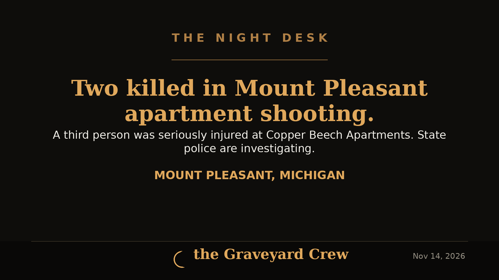
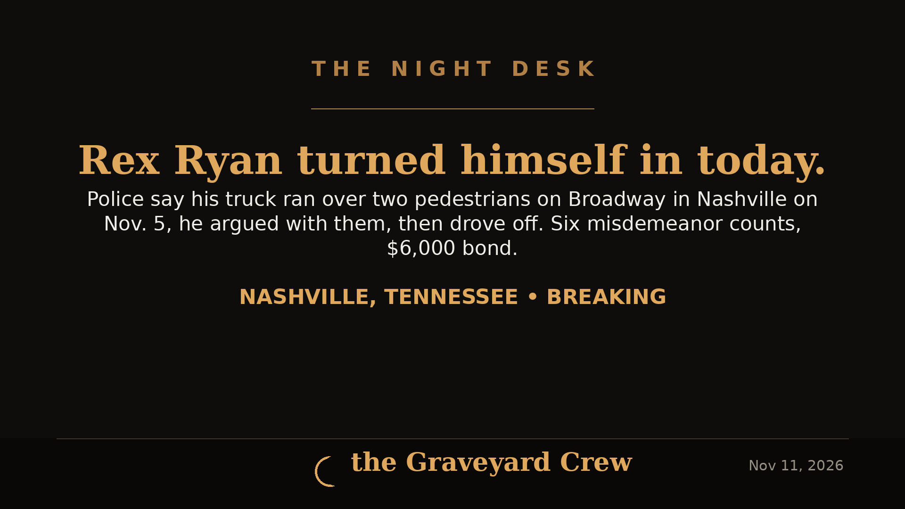
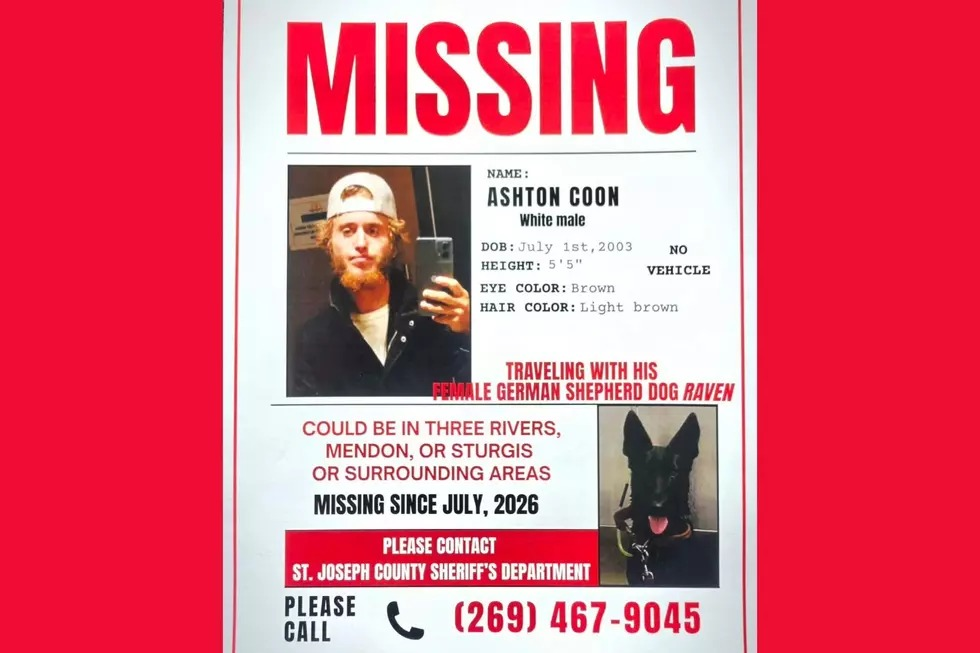
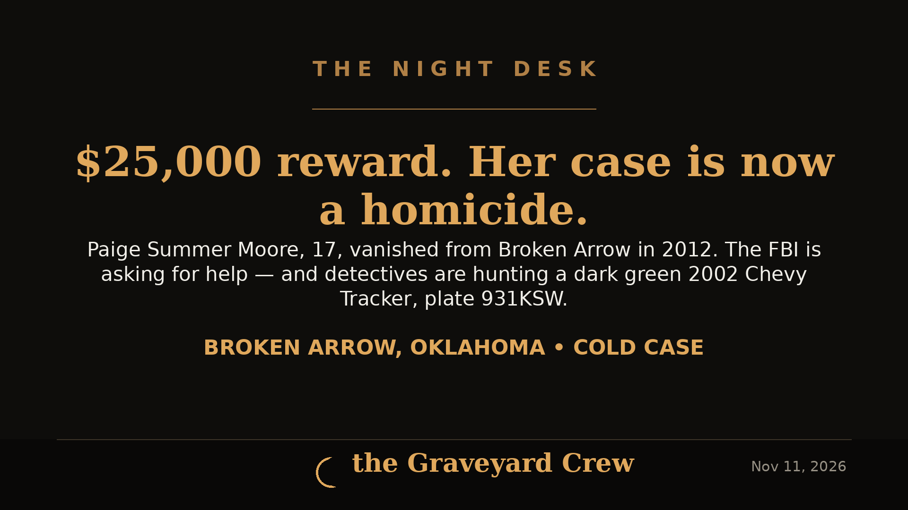
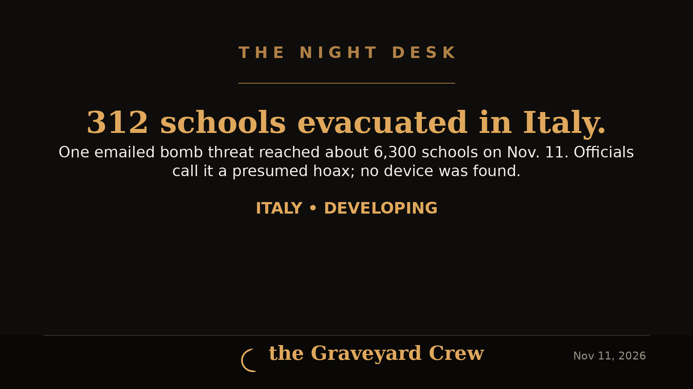
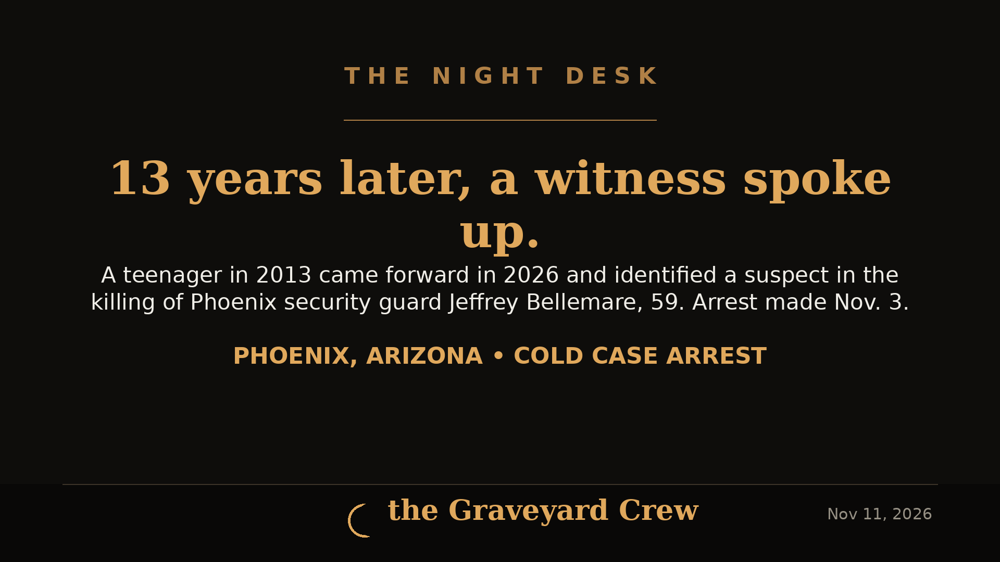
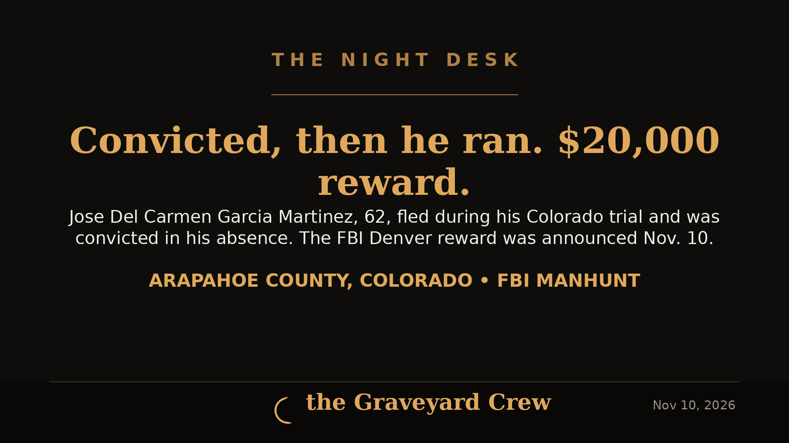

November 19, 2026
PS5 Storage, Round Two: Making Room for the Holiday Game Wave
Round two on PS5 storage: the holiday game wave is bigger than launch day — the three storage tiers, the library triage, and the two install details that decide whether the gift games fit on Christmas night.
READ THE STORY →November 19, 2026
Water Softener Salt: The Upkeep Schedule Nobody Tells You
Choosing salt was the easy part. The upkeep rhythm — the two-minute monthly check, bridging, stocking for guest season, and the once-a-year clean-out — is what keeps a softener working in year three.
READ THE STORY →November 19, 2026
Night-Shift Commute, Holiday Edition: Equipping the Driver, Not Just the Car
The winter car kit equips the car; this one equips the driver — alertness that actually works, the in-cab kit, and surviving the Christmas schedule flip on night shift.
READ THE STORY →November 19, 2026
The Two-Week Runway: Christmas Household Prep Without the December Meltdown
Christmas household prep sequenced over fourteen days: guest capacity, kitchen capacity, power capacity, and the small stuff — batteries, tape, defrost math — that ambushes people.
READ THE STORY →
November 17, 2026
In custody — suspect surrenders in fatal Mundy Township McDonald's shooting
Willie James Kennebrew Jr., 18, surrendered to Genesee County Sheriff's deputies on Tuesday, Nov. 17, five days after the fatal shooting inside the McDonald's at 6015 Hill 23 Dr. in Mundy Township. He is charged with first-degree premeditated murder in the death of Jalen Sims Daniels, 18, a McDonald's employee.
READ THE STORY →
November 17, 2026
Manhunt in Genesee County — suspect sought in fatal Mundy Township McDonald's shooting
Metro Police Authority investigators are searching for Willie James Kennebrew Jr., 18, identified as a suspect in the Nov. 12 fatal shooting inside the McDonald's at 6015 Hill 23 Dr. in Mundy Township. Police say he is armed and dangerous and may have left Mid-Michigan.
READ THE STORY →November 16, 2026
The Night-Shift Drive Home: A Commute Kit for the Hardest Miles of the Day
The drive home is the most dangerous part of a night shift. The alertness layer, the trunk breakdown kit, and rule zero: a nap beats every gadget on the list.
READ THE STORY →November 16, 2026
Toddler Waterpark Days: The Swim Gear That Actually Earns Its Bag Space
An approved, weight-matched vest, swim diapers times three, and sun gear that stays on: the short list of toddler swim gear that earns its space in the bag.
READ THE STORY →November 16, 2026
Water Softener Salt, Explained: Types, How Much Your Tank Takes, and Storing It
Pellets, solar, rock, or potassium chloride — what the bags actually are, how much a typical brine tank takes, and the two-minute monthly check that keeps a softener working.
READ THE STORY →November 16, 2026
A First 3D Printer, Without the Buyer's Remorse: What the Specs Actually Mean
Auto leveling, a PEI flex plate, direct drive: how to read a first-printer listing, what the filament choices mean, and the small kit that prevents big headaches.
READ THE STORY →November 16, 2026
PS5 Headsets for Late-Night Sessions: Hear Everything, Wake Nobody
Game sound in, house sound out: the four specs that matter for a PS5 headset when kids are asleep in the next room, and the settings that matter as much as the hardware.
READ THE STORY →November 15, 2026
Back to PlayStation After Years Away: The PS5 Accessories Worth Buying First
Coming back to PlayStation after years away? The honest accessory order — a second controller, a charging dock, and a headset first — and what to skip for now.
READ THE STORY →November 15, 2026
A Play Space That Survives a Toddler: The Short, Honest Setup List
The short, honest setup list for a toddler play space: furniture anchors and outlet covers first, then a thick foam mat and storage a small person can actually use.
READ THE STORY →November 15, 2026
Night-Shift Sleep: Small Gear That Makes Daytime Sleep Actually Work
Daytime sleep is an environment problem, and environment problems have gear answers: blackout curtains, a sleep mask, white noise, and earplugs — in the order to buy them.
READ THE STORY →November 15, 2026
The Household Emergency Binder: What Actually Belongs in One (and What Doesn't)
What actually belongs in a household emergency binder, what doesn't, and how to keep it safe — plus the ready-made version from our own storefront.
READ THE STORY →November 15, 2026
PS5 Storage, Solved: How to Choose an External Drive for a Growing Game Library
Two different PS5 storage problems, two different answers: an external USB drive for the archive, an internal NVMe SSD for playable space — how to choose, in plain terms.
READ THE STORY →
November 14, 2026
Two killed in Mount Pleasant apartment shooting — police believe one of the deceased was the shooter
Michigan State Police say a 21-year-old man from Jackson and an 18-year-old woman from Ludington died in the Nov. 14 Copper Beech shooting in Mount Pleasant. An 18-year-old Mount Pleasant man was treated and released. Investigators believe one of the deceased was the shooter.
READ THE STORY →
November 13, 2026
Dazman Drake found guilty of first-degree murder in Port Huron killing of Vincent Buckles
A St. Clair County jury found Dazman Drake, 24, guilty of first-degree murder on Friday, Nov. 13, for the Jan. 28, 2025 shooting death of Vincent Buckles in his Port Huron home. Drake was also convicted of home invasion and other charges; sentencing is Dec. 14, and he faces up to life in prison.
READ THE STORY →
November 11, 2026
Rex Ryan surrenders in Nashville, charged in Broadway hit-and-run that injured two pedestrians
Former NFL head coach and current ESPN analyst Rex Ryan surrendered to Metro Nashville Police on Nov. 11 and was booked on misdemeanor charges tied to a Nov. 5 hit-and-run on Broadway, where police say a truck ran over two pedestrians' feet and one leg, the driver argued with the victims, and then drove away.
READ THE STORY →
November 11, 2026
Southwest Michigan man missing since July was last seen traveling with his dog, Raven
Ashton Coon, 23, has been missing since July 2026. He was last seen traveling on foot with his female German Shepherd, Raven, and may be in the Three Rivers, Mendon, or Sturgis area. The St. Joseph County Sheriff's Office is asking anyone with information to call 269-467-9045.
READ THE STORY →
November 11, 2026
FBI offers $25,000 reward in Paige Moore cold case — Broken Arrow teen's 2012 disappearance now ruled a homicide
Paige Summer Moore, 17, walked out of her Broken Arrow, Oklahoma home in the early morning of July 10, 2012 and was never seen again. Police have now reclassified her case as a homicide, detectives are hunting a dark green 2002 Chevrolet Tracker, and the FBI is offering up to $25,000 for information leading to her recovery or the arrest and conviction of those responsible.
READ THE STORY →
November 11, 2026
More than 300 Italian schools evacuated after emailed bomb threat; officials say no concrete danger found
A single emailed bomb threat reached about 6,300 Italian state schools on Nov. 11, prompting precautionary evacuations at more than 300 buildings. Education Minister Giuseppe Valditara called the alerts presumed hoaxes, Prime Minister Giorgia Meloni said checks found no evidence of concrete danger, and no explosive device was reported found.
READ THE STORY →
November 11, 2026
New witness leads to arrest in 2013 Phoenix cold case killing of security guard Jeffrey Bellemare
Phoenix police say a witness who was a teenager in 2013 came forward in early 2026 and identified Joe Alexander Gerardo, 43, in the Nov. 29, 2013 killing of security guard Jeffrey Bellemare, 59. Gerardo was arrested Nov. 3 in Globe and is held on $2 million bond on first-degree murder.
READ THE STORY →
November 10, 2026
FBI offers $20,000 reward for convicted fugitive Jose Del Carmen Garcia Martinez
FBI Denver announced a $20,000 reward on Nov. 10 for Jose Del Carmen Garcia Martinez, 62, who fled during his Arapahoe County trial, cut off his ankle monitor, and was convicted in his absence of sexually assaulting a 15-year-old girl with disabilities.
READ THE STORY →November 10, 2026
Explosive device in a backpack kills a police officer in Oviedo, Spain
One Spanish National Police officer was killed and another seriously wounded on Nov. 10 when an explosive device in a backpack went off in Oviedo as officers responded to a shooting. Authorities said there was no indication yet of a terror link, and the suspect fled.
READ THE STORY →Showing the latest 25 — browse the full archive →